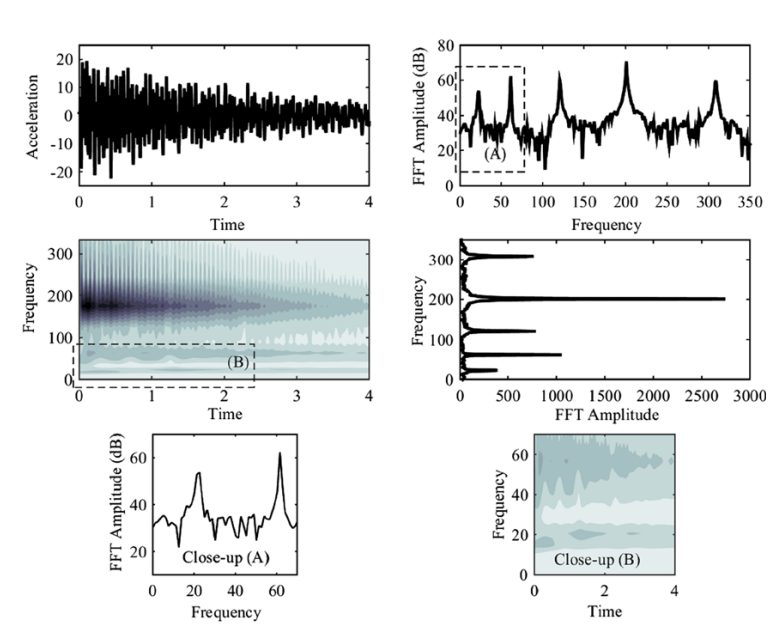

Identification of non-linear parameter of a cantilever beam model with boundary condition non-linearity in the presence of noise: an NSI- and ANN-based approach
Acta Mechanica, 228, pp.4451-4469, 2017. Journal Article

Abstract
In this study the non-linear system identification (NSI) and parameter estimation of a model of a cantilever beam with non-linear stiffness attached to its free end are investigated. For this purpose, the impulse response of the beam model, in the presence of added measurement noise, is obtained by solving the weak form of the governing equation of motion via Rayleigh–Ritz method. The non-linear interaction model (NIM) including a set of intrinsic modal oscillators (IMOs) is constructed based on intrinsic mode functions (IMFs), which are derived by applying empirical mode decomposition (EMD) on the noise-contaminated response signals. For reducing the effect of noise and increasing the accuracy of extracted IMFs, the EMD-based noise reduction is employed, followed by the modification of the IMF amplitudes by introducing a “beta-factor” criterion. The changes in the amplitudes of the forcing functions associated with IMOs are used to extract features to estimate the non-linear parameter of the system. To this end, an artificial neural network has been trained to establish the non-linear relationship between the non-linearity of the system and the forcing functions of IMOs.